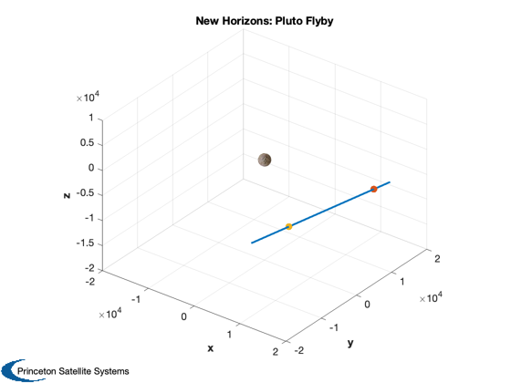

Load and plot the NewHorizons Pluto flyby
----- Ephemeris / WWW_USER Tue Aug 9 09:48:29 2016 Pasadena, USA / Horizons ----- Target body name: New Horizons (spacecraft) (-98) {source: NH} Center body name: Pluto (999) {source: NH} Center-site name: BODY CENTER ----- Start time : A.D. 2015-Jul-14 00:00:00.0000 TDB Stop time : A.D. 2015-Jul-15 00:00:00.0000 TDB Step-size : 30 minutes ----- Center geodetic : 0.00000000,0.00000000,0.0000000 {E-lon(deg),Lat(deg),Alt(km)} Center cylindric: 0.00000000,0.00000000,0.0000000 {E-lon(deg),Dxy(km),Dz(km)} Center radii : 1195.0 x 1195.0 x 1195.0 km {Equator, meridian, pole} Output units : KM-S Output format : 01 Reference frame : ICRF/J2000.0 Output type : GEOMETRIC cartesian states Coordinate systm: Ecliptic and Mean Equinox of Reference Epoch ----- JDTDB, , X, Y, Z, -----
%--------------------------------------------------------------------------- % Copyright (c) 2017 Princeton Satellite Systems, Inc. % All rights reserved. %--------------------------------------------------------------------------- fid = fopen('NewHorizonsFlyby.txt'); C = textscan(fid,'%f%s%f%f%f','delimiter',','); x = C{3}; y = C{4}; z = C{5}; Plot3D([x y z]'); hSurf = PlotPlanet( [0;0;0], 1151, Map('Pluto'), true ); axis(2*[-10000 10000 -10000 10000 -10000 5000]) title('New Horizons: Pluto Flyby') hold on x1 = [1.203859177986807E+04, 1.533008966500017E+04, -8.644218675305214E+03]'; p1 = plot3(x1(1),x1(2),x1(3),'.'); x2 = [1.232125186599508E+04, -9.170144830096331E+03, -4.808393631578325E+03]'; p2 = plot3(x2(1),x2(2),x2(3),'.'); set(p2,'markersize',20) set(p1,'markersize',20) % ******************************************************************************* % Coordinate system description: % % Ecliptic and Mean Equinox of Reference Epoch % % Reference epoch: J2000.0 % xy-plane: plane of the Earth's orbit at the reference epoch % x-axis : out along ascending node of instantaneous plane of the Earth's % orbit and the Earth's mean equator at the reference epoch % z-axis : perpendicular to the xy-plane in the directional (+ or -) sense % of Earth's north pole at the reference epoch. % % Symbol meaning % % JDTDB Epoch Julian Date, Barycentric Dynamical Time % X x-component of position vector (km) % Y y-component of position vector (km) % Z z-component of position vector (km) % % Geometric states/elements have no aberration corrections applied. % % Computations by ... % Solar System Dynamics Group, Horizons On-Line Ephemeris System % 4800 Oak Grove Drive, Jet Propulsion Laboratory % Pasadena, CA 91109 USA % Information: http://ssd.jpl.nasa.gov/ % Connect : telnet://ssd.jpl.nasa.gov:6775 (via browser) % telnet ssd.jpl.nasa.gov 6775 (via command-line) % Author : Jon.Giorgini@jpl.nasa.gov % ******************************************************************************* %-------------------------------------- % $Id: b74061ef0853674fcc825666e0e92e802af1561a $